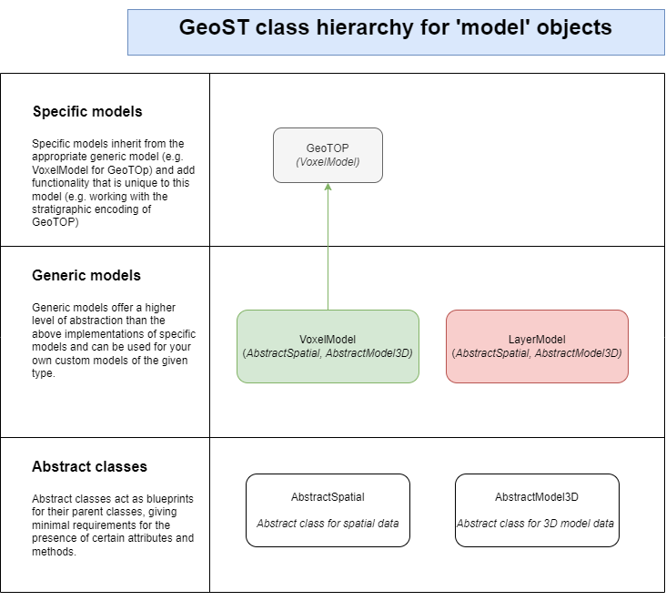

Data structures#
GeoST uses standardized internal data structures and data validation to ensure that the functionality GeoST offers can always reliably be applied. Before we go into the relevant data structures we introduce some terminology. Subsurface data comes in many different forms (e.g. boreholes, CPTs or 3D models) but we distinguish between two main types:
Survey: the actual measurements (i.e. raw data) of the subsurface. These can comprise boreholes, CPTs, Well logs, Seismic or EM lines and others.
Model: for example a 3D voxel- or layermodel or a geological map. These are the result of analyses using survey data (e.g. Kriging interpolation) and as such are considered to be an interpretation of the subsurface.
GeoST provides different data structures to handle these different kinds of data. These will be shown in this user guide section.
Collection#
For survey data the core data structure is a geost.Collection which holds the data together in a header and data table. Basically, these tables contain:
header: metadata and spatial information per survey.
data: contains the logged data of surveys.
The header and data tables have a one-to-many relationship: one survey (e.g. borehole) is one row in the header and multiple rows in the data.
Typically available types of subsurface data comprise point-like data such as boreholes, cpts, well logs or line-like data such as seismics, GPR, EM. These can all be held in a Collection. By default, the available read functions for different types of survey data return a Collection (see: Survey data).
While working with a Collection, selections change the contents of the header and data tables
but the Collection automatically maintains alignment between the two. Therefore, users can safely
select and analyse the data while being sure of consistency. It is recommended to
work with a Collections by default, unless you specifically only need to work with either the
header or data table. Let’s first check out a Collection containing borehole data:
import geost
# Load the Utrecht Science Park example borehole data
collection = geost.data.boreholes_usp()
collection
Collection
header (rows, columns) : (67, 5)
data (rows, columns) : (1398, 32)
crs: Amersfoort / RD New
vertical datum: NAP height
Overview of attributes and methods#
The Collection class implements many different attributes
as well as analysis and selection methods. A short summary of relevant attributes and methods
is presented here. A full overview can be found Collection API reference.
Attributes
data: Data table of the Collectionheader: Header table of the Collectioncrs: Current coordinate reference system (CRS) of the Collectionvertical_datum: Current vertical datum of the Collection
Reference systems
set_crs: Set the CRS of the collectionto_crs: Convert current collection CRS to the specified CRSset_vertical_datum: Similar to set_crs, but for vertical datum (e.g. NAP = EPSG:5709)to_vertical_datum: Similar to to_crs, bit for vertical datum. Currently not implemented.
Analysis
get_cumulative_thickness: Returns the cumulative thickness of any specified criteria.get_layer_top: Return the top depth at which a specified layer occurs.
Spatial selections
select_within_bbox- Select data points in the Collection within a bounding boxselect_with_points- Select data points in the Collection within distance to other point geometriesselect_with_lines- Select data points in the Collection within distance from line geometriesselect_within_polygons- Select data points in the Collection within polygon geometries
Conditional selections
select_by_values- Select data points in the Collection based on the presence of certain values in one or more of the data columnsselect_by_length- Select data points in the Collection based on length requirementsselect_by_depth- Select data points in the Collection based on depth constraints
Slicing
slice_depth_interval- Slice boreholes in the Collection down to the specified depth intervalslice_by_values- Slice boreholes in the Collection based on value (e.g. only sand layers, remove others).
Header table#
In a Collection, the header table is always a geopandas.GeoDataFrame instance. The header holds the spatial location of each survey in the “geometry” column, and metadata such as the surface level, end-depth and others. Let’s check out the header:
print(f"Type of header: {type(collection.header)}")
collection.header.head()
Type of header: <class 'geopandas.geodataframe.GeoDataFrame'>
| nr | x | y | surface | geometry | |
|---|---|---|---|---|---|
| 0 | B31H0541 | 139585 | 456000 | 1.20 | POINT (139585 456000) |
| 1 | B31H0611 | 139600 | 455060 | 1.20 | POINT (139600 455060) |
| 2 | B31H0718 | 139950 | 455200 | 1.30 | POINT (139950 455200) |
| 3 | B31H0803 | 139675 | 455087 | 2.16 | POINT (139675 455087) |
| 4 | B31H0806 | 139684 | 455384 | 1.00 | POINT (139684 455384) |
In the case of the Collection above, the geometry column contains shapely.Point geometries. In case of 2D line
data (e.g. seismic data) this would contain shapely.LineString geometries. Each entry
in the header (row in the Geodataframe) corresponds to one specific survey: one borehole or one seismic line.
The header is not limited to just the columns you see above. Any number of columns can be added
to the header to provide additional information on surveys. Different analysis methods can be used for
this, see for example the Collection.spatial_join method.
If you’re only interested in survey locations and/or metadata, it is adviced to work directly
with the header object to avoid the (small) additional overhead caused by a Collection
object. This overhead is caused by checks of the header against data after operations to
ensure alignmen between the two. If you are only working with a header or data table, GeoST functionality is still available through a DataFrame and GeoDataFrame accessor which we will cover in a later section.
Data table#
The data table is generally a pandas.DataFrame instance, allthough this may also be a GeoDataFrame. The data table holds all the logged data of any survey. Let’s first check it out:
print(f"Type of data: {type(collection.data)}")
collection.data
Type of data: <class 'pandas.DataFrame'>
| nr | x | y | surface | end | top | bottom | lith | zm | zmk | ... | cons | color | lutum_pct | plants | shells | kleibrokjes | strat_1975 | strat_2003 | strat_inter | desc | |
|---|---|---|---|---|---|---|---|---|---|---|---|---|---|---|---|---|---|---|---|---|---|
| 0 | B31H0541 | 139585 | 456000 | 1.200 | -9.900 | 0.00 | 0.20 | K | NaN | NaN | ... | NaN | ON | NaN | 0 | 0 | 0 | NaN | EC | NaN | [TEELAARDE#***#****#*] .......................... |
| 1 | B31H0541 | 139585 | 456000 | 1.200 | -9.900 | 0.20 | 0.60 | K | NaN | NaN | ... | NaN | BR | NaN | 0 | 0 | 0 | NaN | EC | NaN | [KLEI#***#****#*] grysbruin. |
| 2 | B31H0541 | 139585 | 456000 | 1.200 | -9.900 | 0.60 | 0.95 | V | NaN | NaN | ... | NaN | BR | NaN | 0 | 0 | 0 | NaN | NI | NaN | [VEEN#***#****#*] donkerbruin. |
| 3 | B31H0541 | 139585 | 456000 | 1.200 | -9.900 | 0.95 | 2.80 | Z | NaN | ZMFO | ... | NaN | GR | NaN | 0 | 0 | 0 | NaN | EC | NaN | [ZAND#***#****#*] FYN TOT matig fyn# iets slib... |
| 4 | B31H0541 | 139585 | 456000 | 1.200 | -9.900 | 2.80 | 4.20 | Z | NaN | ZFC | ... | NaN | BR | NaN | 0 | 0 | 0 | NaN | BXWI | NaN | [ZAND#***#****#*] fyn# grysbruin. |
| ... | ... | ... | ... | ... | ... | ... | ... | ... | ... | ... | ... | ... | ... | ... | ... | ... | ... | ... | ... | ... | ... |
| 1393 | B32C1893 | 141266 | 455989 | 2.328 | -2.172 | 0.00 | 0.50 | Z | NaN | ZZF | ... | NaN | BR | NaN | 0 | 0 | 0 | NaN | NaN | NaN | BRON:GEF-BESTAND;0.00;0.50;Zs3h2 PU2;ZZF;BR; |
| 1394 | B32C1893 | 141266 | 455989 | 2.328 | -2.172 | 0.50 | 1.10 | Z | NaN | ZZF | ... | NaN | GR | NaN | 0 | 0 | 0 | NaN | NaN | NaN | BRON:GEF-BESTAND;0.50;1.10;Zs3 KLE2;ZZF;GR DO; |
| 1395 | B32C1893 | 141266 | 455989 | 2.328 | -2.172 | 1.10 | 1.40 | K | NaN | NaN | ... | CMST | GR | NaN | 0 | 0 | 0 | NaN | NaN | NaN | BRON:GEF-BESTAND;1.10;1.40;Ks2h1;;GR TBR;KMST |
| 1396 | B32C1893 | 141266 | 455989 | 2.328 | -2.172 | 1.40 | 2.10 | Z | NaN | ZZF | ... | NaN | GR | NaN | 0 | 0 | 0 | NaN | NaN | NaN | BRON:GEF-BESTAND;1.40;2.10;Zs2 SLI1;ZZF;GR DO; |
| 1397 | B32C1893 | 141266 | 455989 | 2.328 | -2.172 | 2.10 | 4.50 | Z | NaN | ZZF | ... | NaN | GR | NaN | 0 | 0 | 0 | NaN | NaN | NaN | BRON:GEF-BESTAND;2.10;4.50;Zs2;ZZF;GR; |
1398 rows × 32 columns
Here we see that a single survey contains multiple rows, which in this case are “layers” as we are looking at borehole data. With survey data we can generally distinguish between “layered” and “discrete” data:
Layered data contains data that is logged in terms of layers (i.e. depth intervals over which properties are the same) with “top” and “bottom” information for each layer.
Discrete data contains data that is logged over discrete intervals (e.g. every 20 cm) with “depth” information for each depth interval.
GeoST can treat both these types of data interchangeably and we provide ways to combine one with the other. As with the header table, the data table is not limited to columns you see above and any number of columns can be added during analysis.
Also, if you are only interested in the survey measurements and don’t need to work with geometries or any other additional header data, it is adviced to directly work with the data table to avoid the overhead from a Collection (i.e. maintaining header/data alignment). See the accessor section. Several read functions provide the option to return a DataFrame instead of a
Collection by setting as_collection=False when using the function.
Positional columns#
GeoST requires that several data columns are present to ensure that the methods in a Collection will work, which are referred to as “positional columns”. The required columns differ per type of method. For example, Collection.slice_depth_interval requires depth information about the surface level of surveys and the depth of layers while Collection.select_with_points requires a valid geometry. The presence of depth information or a valid geometry is needed for both methods to work however, both presences are optional. The method slice_depth_interval does not need a geometry to work and select_with_points does not need depth information. Therefore, their presence is only required when you want to use one of these methods. This was chosen as design to ensure the most flexibility for users with different needs. The only mandatory presence is a column which identifies each individual survey (e.g. “nr”)
in both the header and data table.
Note
See the Positional columns section on the Survey data page of this User guide for specific information on positional columns.
GeoST accessor#
When you only need to work with one of the header or data tables, all the methods available in Collections are also available when you work directly with the header GeoDataFrame and data DataFrame. This is achieved through a so-called “accessor”. Under the hood, every Collection method also uses this accessor.
Below we demonstrate shortly how these work by comparing the usage of Collection methods with those from the accessors. The accessor can be by calling the .gst
on a GeoDataFrame or DataFrame.
# Create separate `header` and `data` variables for the demonstration.
header = collection.header
data = collection.data
print(header.gst)
print(data.gst)
<geost.accessor.GeostFrame object at 0x7f4c91390aa0>
<geost.accessor.GeostFrame object at 0x7f4c913a1550>
As you can see, for both the header and data table it prints “geost.accessor.GeostFrame object”.
This is the object where most GeoST methods are actually implemented and why any method available
in a Collection is also accessible through the .gst accessor.
Let’s first compare the usage of the select_within_bbox which is method that typically operates on the header
table since it is a spatial method and the header contains the spatial information about the
surveys. As the name suggests, this selects the surveys which are located within a specific
bounding box extent. All we need to do to call this method on the “header” GeoDataFrame is
using the .gst in between as shown below.
collection_select = collection.select_within_bbox(139_500, 455_000, 140_000, 455_500)
header_select = header.gst.select_within_bbox(139_500, 455_000, 140_000, 455_500)
print("collection_select.data:", collection_select.header, sep="\n")
print("header_select:", header_select, sep="\n")
header_select.gst # Selection result also has the .gst accessor and methods available
collection_select.data:
nr x y surface geometry
1 B31H0611 139600 455060 1.200 POINT (139600 455060)
2 B31H0718 139950 455200 1.300 POINT (139950 455200)
3 B31H0803 139675 455087 2.160 POINT (139675 455087)
4 B31H0806 139684 455384 1.000 POINT (139684 455384)
5 B31H0807 139684 455405 1.000 POINT (139684 455405)
8 B31H0810 139901 455401 1.000 POINT (139901 455401)
19 B31H1694 139520 455125 1.200 POINT (139520 455125)
20 B31H1695 139660 455290 1.100 POINT (139660 455290)
21 B31H1696 139820 455020 1.300 POINT (139820 455020)
25 B31H3284 139621 455080 2.010 POINT (139621 455080)
26 B31H3285 139521 455181 2.157 POINT (139521 455181)
27 B31H3286 139636 455194 1.492 POINT (139636 455194)
28 B31H3287 139647 455396 1.430 POINT (139647 455396)
29 B31H3288 139534 455397 1.560 POINT (139534 455397)
header_select:
nr x y surface geometry
1 B31H0611 139600 455060 1.200 POINT (139600 455060)
2 B31H0718 139950 455200 1.300 POINT (139950 455200)
3 B31H0803 139675 455087 2.160 POINT (139675 455087)
4 B31H0806 139684 455384 1.000 POINT (139684 455384)
5 B31H0807 139684 455405 1.000 POINT (139684 455405)
8 B31H0810 139901 455401 1.000 POINT (139901 455401)
19 B31H1694 139520 455125 1.200 POINT (139520 455125)
20 B31H1695 139660 455290 1.100 POINT (139660 455290)
21 B31H1696 139820 455020 1.300 POINT (139820 455020)
25 B31H3284 139621 455080 2.010 POINT (139621 455080)
26 B31H3285 139521 455181 2.157 POINT (139521 455181)
27 B31H3286 139636 455194 1.492 POINT (139636 455194)
28 B31H3287 139647 455396 1.430 POINT (139647 455396)
29 B31H3288 139534 455397 1.560 POINT (139534 455397)
<geost.accessor.GeostFrame at 0x7f4c9136e0d0>
We can see that the selection result is exactly the same and after selecting from the header
table, the .gst accessor remains available in the selection result for making further
selections or chaining several selection methods for example.
Also with methods that would typically operate on the data table, for example slice_by_values, it works exactly the same
way. All we need to do to call this method on the “data” DataFrame is to use the .gst in between as shown below.
# Select boreholes which contain clay anywhere as the main lithology.
collection_select = collection.slice_by_values("lith", "K")
data_select = data.gst.slice_by_values("lith", "K")
print("collection_select.data:", collection_select.data[["nr", "lith"]], sep="\n")
print("data_select:", data_select[["nr", "lith"]], sep="\n")
data_select.gst # Selection result also has the .gst accessor and methods available
collection_select.data:
nr lith
0 B31H0541 K
1 B31H0541 K
8 B31H0611 K
9 B31H0611 K
27 B31H0718 K
... ... ...
1370 B32C1881 K
1375 B32C1889 K
1384 B32C1891 K
1385 B32C1891 K
1395 B32C1893 K
[261 rows x 2 columns]
data_select:
nr lith
0 B31H0541 K
1 B31H0541 K
8 B31H0611 K
9 B31H0611 K
27 B31H0718 K
... ... ...
1370 B32C1881 K
1375 B32C1889 K
1384 B32C1891 K
1385 B32C1891 K
1395 B32C1893 K
[261 rows x 2 columns]
<geost.accessor.GeostFrame at 0x7f4c9132de20>
Again the selection result is exactly the same and after the selection, the .gst accessor remains available.
Model data#
GeoST also supports working with model data and offers methods to combine these data with
point and line data. Model data does not follow the same header/data approach as point
and line data. Instead there are generic model classes, of which some have an
implementation that adds specific functionality for that model. An example of this is
the geost.models.VoxelModel as a generic model class and GeoTOP being a specific implementation of a VoxelModel.
GeoST currently supports the following generic models and implementations:
Generic models and implementations
VoxelModel: Class for 3D voxel models, with data stored in thedsattribute, anXarray.Dataset.Implementations:
GeoTOP
LayerModel: Class for layer models, not yet implementedImplementations: None

Voxel models#
The VoxelModel class stores data in the ds
attribute, which is an Xarray.Dataset.
A custom voxel model can be instantiated from a NetCDF file. For this, see the documentation of the
VoxelModel.from_netcdf class constructor.
An instance of VoxelModel offers basic methods for
selecting, slicing and exporting models.
For more guidance on using a Voxel model within GeoST, see the BRO GeoTOP section in the user guide.